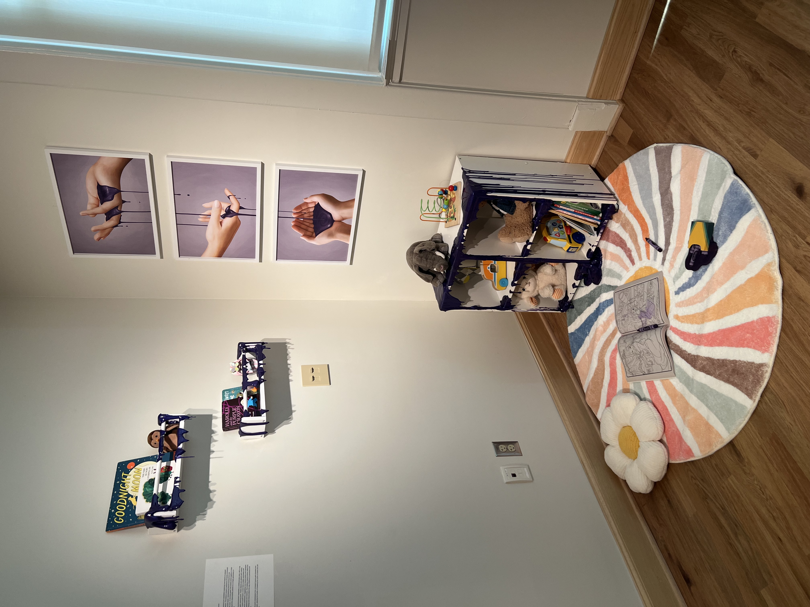
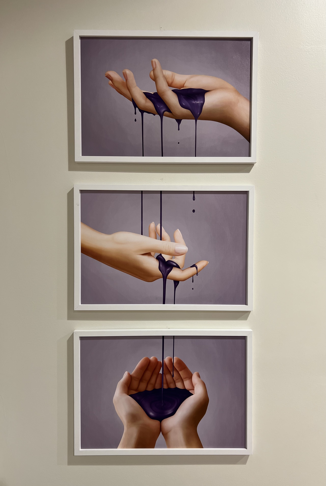
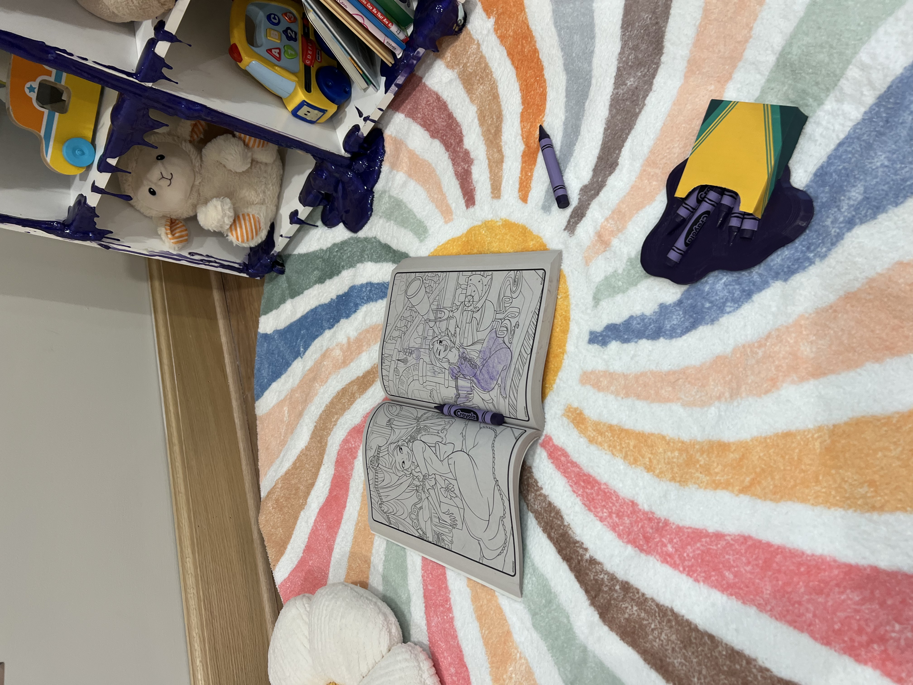
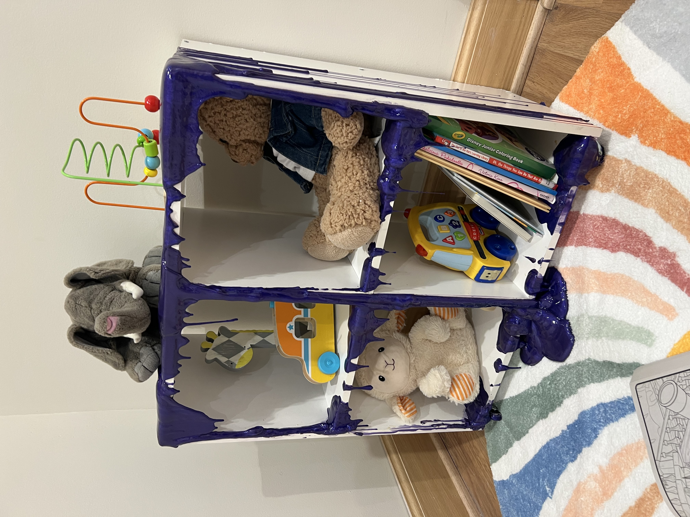
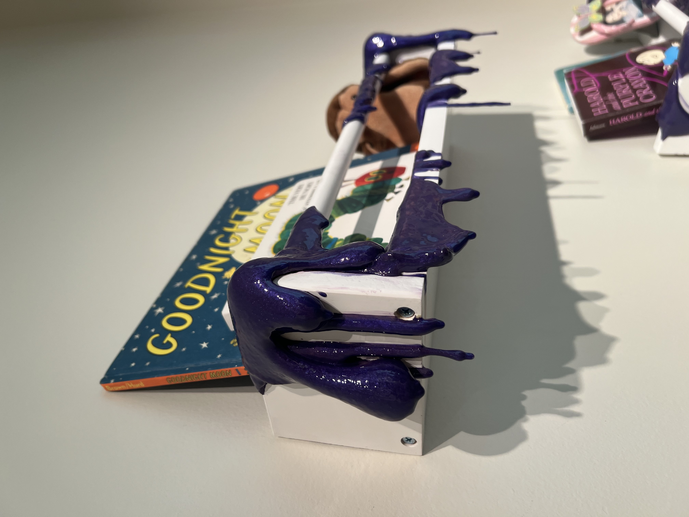
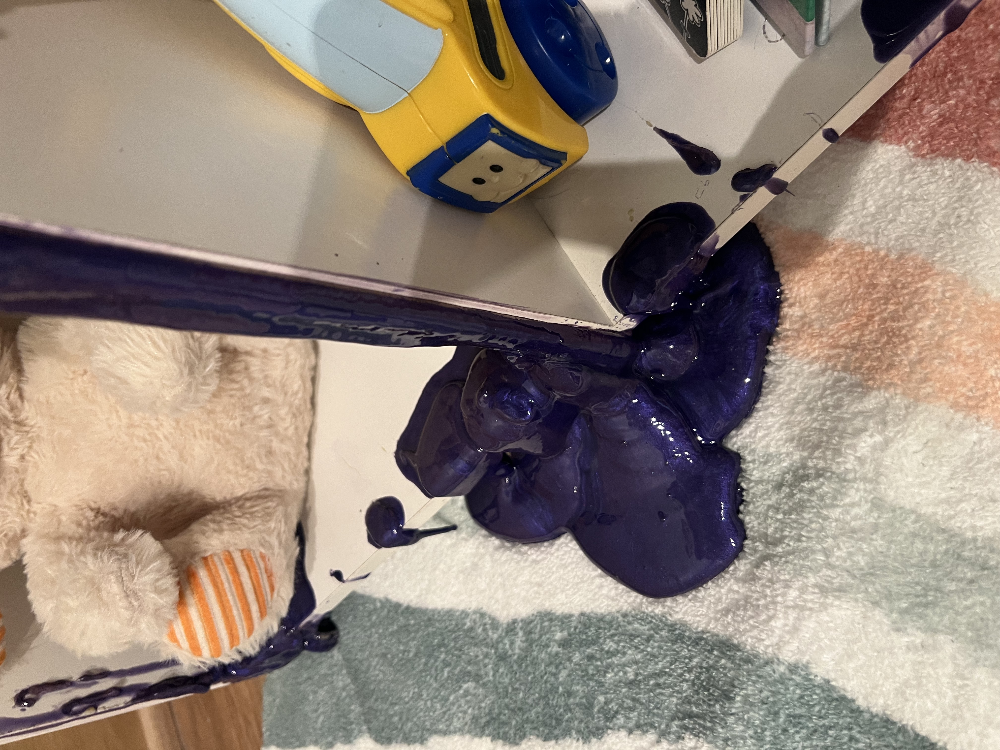
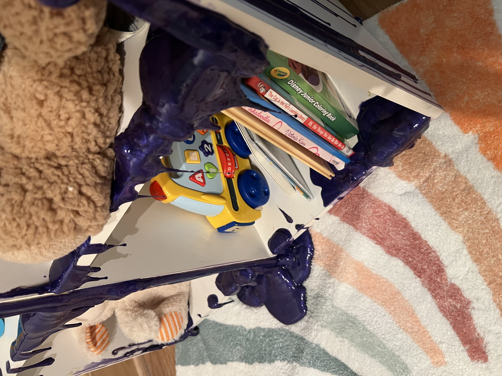
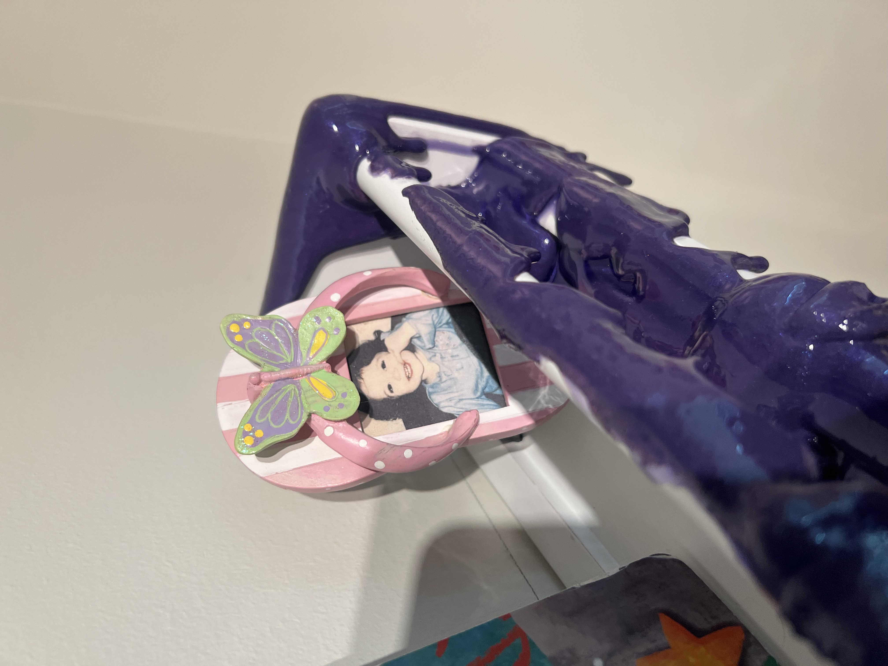
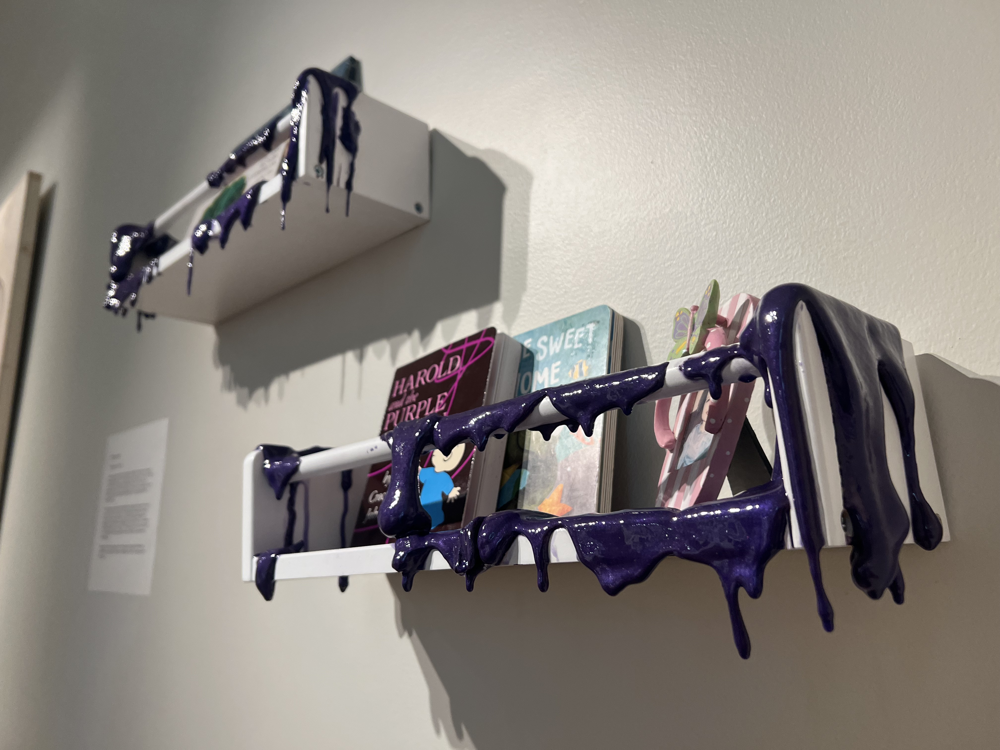
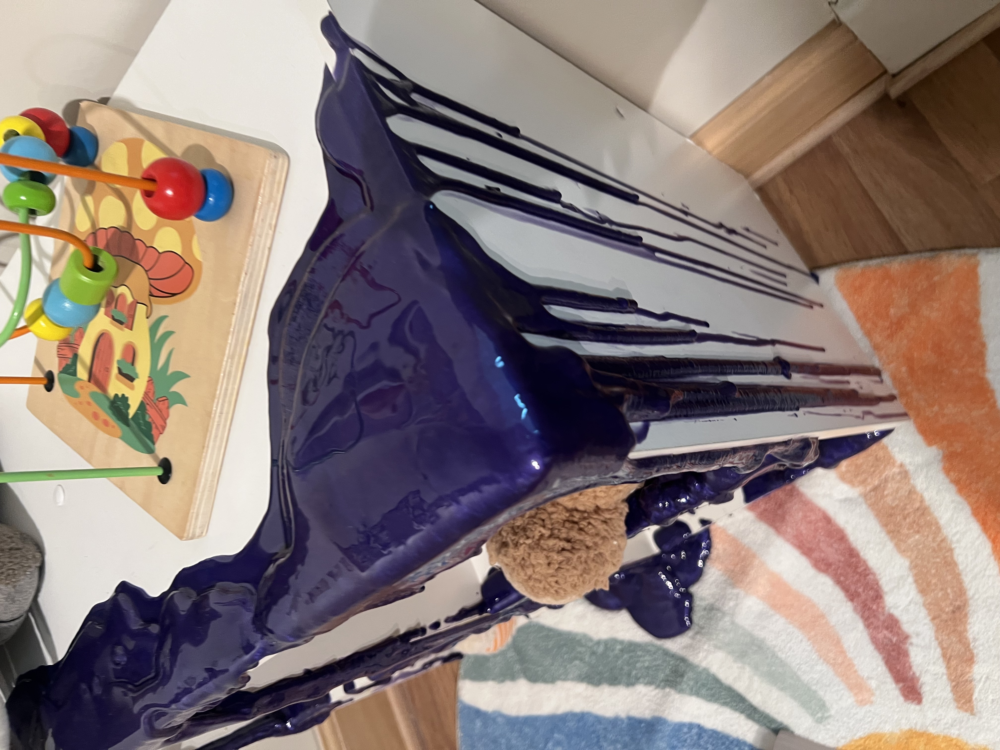

Generational Trauma, 2026
Mixed media installation (Digital illustration (triptych), found objects, polyurethane foam, epoxy resin, 3D printed PLA) 5 ft x 5 ftGenerational Trauma is an installation exploring how trauma is passed between generations. The triptych shows a sequence of hands connected by a stream of purple liquid, representing trauma moving from one generation to the next. In the final panel, the hands come together to stop the flow, pointing to the responsibility placed on a single generation to break the cycle.
The surrounding environment resembles a childhood play area, with a rug, toys, and an open coloring book. These objects are altered with melting forms and the same purple liquid, a color that is widely associated with domestic violence awareness, suggesting how trauma enters and reshapes childhood experiences and memory. The melting crayons further reflect this idea, representing how trauma alters the way childhood is perceived and remembered.
, this work emphasizes how unhealed trauma gets inherited and passed forward, placing the burden of breaking the cycle on those who did not create it.









